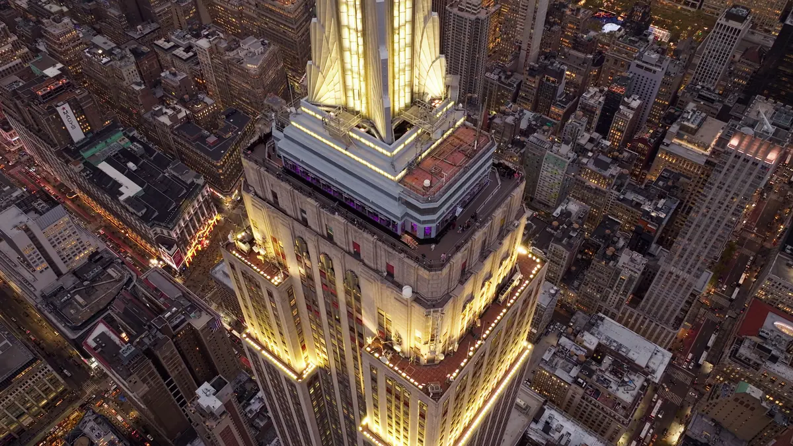

01
Empire State Building Observatory
ObservatórioUS$ 39
+ US$ 5 de taxa

Crédito pendente — preencher autor e licença
Fachada vista da rua: liberada nos EUA pela liberdade de panorama (17 U.S.C. §120a), que permite fotografar e publicar edifícios visíveis de local público. Não vale para o interior.
Endereço
350 Fifth Avenue, NY 10118. Entrada de visitantes pela 20 West 34th Street, entre a Fifth e a Sixth Avenue.
Ver no mapa
Ver no mapa
Valor da entrada
Preço dinâmico, sempre anunciado como “a partir de”. Best Value US$ 39 · Main Deck 86º andar US$ 44 · AM/PM US$ 62 · Top Deck 86º + 102º US$ 79 · Express Pass US$ 85 · Sunrise US$ 135. Taxa de reserva de US$ 5 na maioria das compras. Morador de NYC tem 25% de desconto.
Pontos de referência
Esquina da Fifth Avenue com a West 34th Street, no Midtown. A poucos quarteirões a leste da Herald Square e da loja Macy's, e ao norte do Koreatown.
Metrô mais próximo
34 St–Herald Square (B, D, F, M, N, Q, R, W) a 5 min · 34 St–Penn Station (1, 2, 3, A, C, E) a 5 min · 33 St (6) a três quarteirões.
Visitantes por ano
≈4 milhões/ano — dado antigo, cifra de 2010 repetida até 2022. A Empire State Realty Trust reportou queda de 18% no 1º trimestre e 29% no 2º trimestre de 2026, atribuída à retração do turismo internacional. Número absoluto recente: não divulgado.
Menor visitação e temperatura
Janeiro e fevereiro estimativa — o observatório não publica sazonalidade. Janeiro: máx. 4 °C, mín. −2 °C. Fevereiro: máx. 6 °C, mín. −1 °C.
Curiosidades
- Foi erguido em cerca de 13 meses e meio, terminando antes do prazo, por US$ 40.948.900 — algo como US$ 678 milhões de hoje.
- Em 28 de julho de 1945 um bombardeiro B-25 do Exército americano se chocou contra o 79º andar em meio ao nevoeiro. O prédio reabriu poucos dias depois.
- O observatório do 80º andar, aberto em 2019, tem um mural panorâmico do skyline desenhado de memória pelo artista britânico Stephen Wiltshire.
Fatos históricos
Inaugurado em 1º de maio de 1931, projeto de Shreve, Lamb and Harmon, com William F. Lamb à frente. Foi o prédio mais alto do mundo de 1931 a 1970. Declarado National Historic Landmark em 1986. O deck do 102º andar ficou fechado do fim dos anos 1990 até 2005 e ganhou janelas do piso ao teto na reforma de 2019.
Dias em que não funciona
Nenhum. O site oficial afirma que abre 365 dias por ano, “com chuva, sol ou neve”, incluindo todos os feriados. Só os horários mudam por temporada.
Pontos turísticos próximos
Herald Square e Macy's 5 min · Koreatown 3 min · Madison Square Garden e Penn Station 10 min · Bryant Park e Biblioteca Pública 12 min · Flatiron 12 min · Times Square 18 min.